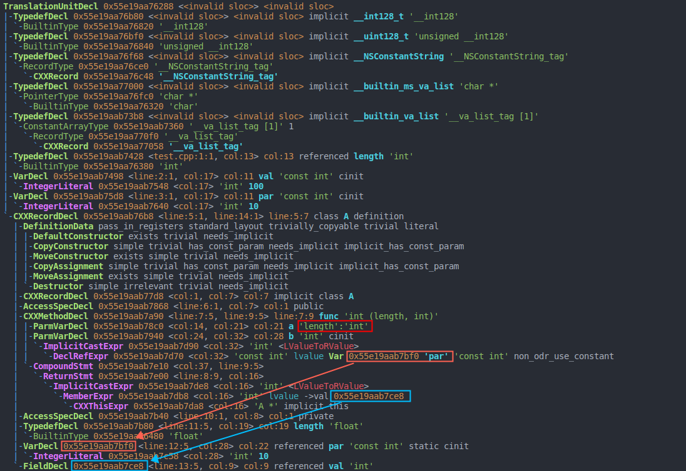

类成员函数在何时决议
先说结论：编译器在解析类的声明的时候，在遇到类成员函数时会对其函数签名进行决议（因为有了函数签名就可以匹配函数调用操作），而在整个类的声明都解析完成之后才对成员函数体内的符号进行决议。
根据上面这句话，理解编译器处理下述代码时候的行为：
1 | typedef int length; |
思考，对于上述代码，成员函数 func 中：
- length 会是什么类型呢，是第一行的 int 类型还是第 11 行的 float 类型呢？
- 默认参数 par 是用全局变量中的 par 来决议还是类 A 中的静态成员 par 来决议呢？
- 函数体中的 val 是用全局变量中的 val 来决议还是类 A 中的成员变量 val 来决议呢？

- length 被编译器解析为 int 类型，这是因为编译器在解析类声明的时候遇到了成员函数 func，而函数的形参类型属于函数签名的一部分，且编译器还没有解析到类 A 中内部的 type 声明，所以将 length 解析为 int 类型。
- 默认形参 par 和函数内符号 val 均分别被解析为类中的静态成员和成员变量，这是因为它们不属于函数签名的部分，所以在整个类的声明被解析完后才进行决议。
总结：受上述示例启发，我们在以后的编程过程中可以采取一种防御性的编程风格，即将类里面的 type 声明都放在类的起始处，防止出现意料之外的结果。